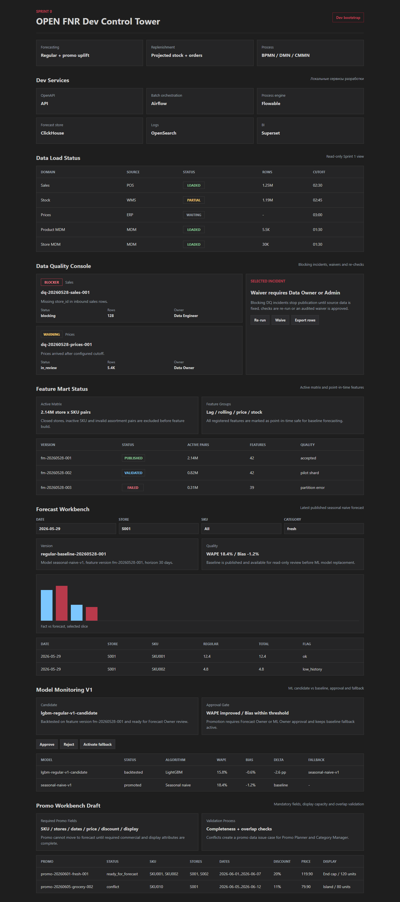

OPEN FNR / Sprint 7 / Promo Data Model And Validation
Отчёт по UI-тестированию и тестированию бизнес-процессов
Отчёт фиксирует тестовый цикл Sprint 7: промо как управляемый объект, обязательные поля, проверка скидки/цены/выкладки и overlap validation.
Аннотация теста
Мы тестируем Promo Workbench Draft, потому что промо-прогноз невозможен без корректного промо-плана. Метод проверки объединяет API-контракт, Pydantic validation, DMN completeness/overlap rules, BPMN validation process, CMMN issue case, UI screenshot и regression tests. Такой способ нужен, чтобы промо не попадало в forecast без SKU, магазинов, дат, цены, скидки, места выкладки и мощности выкладки.
Автоматические проверки
| Проверка | Что делаем | Зачем | Ожидаемый результат | Фактический результат |
|---|---|---|---|---|
python -m pytest |
Запускаем backend, promo, process, data и encoding тесты. | Проверить обязательные поля промо, overlap, BPMN/DMN/CMMN. | Все тесты проходят. | 58 passed |
npm.cmd run build |
Собираем React/Vite UI. | Проверить Promo Workbench Draft. | Сборка завершается без ошибок. | vite build completed |
| Playwright screenshot | Открываем UI и снимаем full-page screenshot. | Зафиксировать визуальный результат промо-сценария. | Скриншот содержит промо-таблицу и обязательные атрибуты. | Скриншот сохранён |
UI-тестирование
| Шаг | Что делаем | Зачем | Почему именно так | Ожидаемый результат | Фактический результат |
|---|---|---|---|---|---|
| 1 | Открываем Promo Workbench Draft. | Проверить, что Promo Planner видит рабочий промо-экран. | Промо должно быть отдельным объектом до promo uplift. | Отображается блок Promo Workbench Draft. | Отображается. |
| 2 | Проверяем обязательные поля. | Убедиться, что UI показывает SKU, магазины, даты, цену, скидку и выкладку. | Эти поля напрямую влияют на uplift и доступность товара. | Все обязательные атрибуты видны в таблице. | Видны. |
| 3 | Проверяем display capacity. | Понять, есть ли физическая возможность выкладки. | RELEX-подобный контур учитывает место и мощность выкладки как фактор спроса. | Видны End cap / 120 units и Island / 80 units. | Видны. |
| 4 | Проверяем статус conflict. | Показать, что промо с конфликтом не готово к прогнозу. | Overlap должен создавать бизнес-задачу, а не тихо проходить в forecast. | Видна строка promo со статусом conflict. | Видна. |
Тестирование бизнес-процессов
| Процесс | Шаг | Что делаем | Зачем | Ожидаемый результат | Фактический результат |
|---|---|---|---|---|---|
promo_draft_validation_process |
1 | Стартуем процесс после сохранения draft. | Каждое промо должно автоматически проверяться после изменения. | BPMN содержит start event Promo draft saved. | Подтверждено XML-тестом. |
promo_draft_validation_process |
2 | Проверяем completeness. | Нельзя прогнозировать промо без SKU, магазинов, цены, скидки и выкладки. | BPMN содержит Validate promo completeness. | Подтверждено XML-тестом. |
promo_draft_validation_process |
3 | Проверяем overlap. | Одновременные промо на тот же SKU/store/date искажают uplift. | BPMN содержит Detect promo overlap. | Подтверждено XML-тестом и API-тестом. |
promo_completeness_decision |
1 | Проверяем DMN required fields. | Правила полноты должны быть настраиваемыми. | DMN содержит has_sku, has_store, has_display, has_price. | Подтверждено XML-тестом. |
promo_overlap_decision |
1 | Проверяем DMN overlap. | Конфликт должен зависеть от SKU, store и пересечения дат. | DMN содержит same_sku, same_store, date_overlap. | Подтверждено XML-тестом. |
promo_data_issue_case |
1 | Проверяем CMMN issue case. | Promo Planner и Category Manager должны совместно исправлять конфликт. | CMMN содержит Fix required promo fields и Resolve promo overlap. | Подтверждено XML-тестом. |
Скриншоты

Скриншот: Promo Workbench Draft после Sprint 7.
Вывод
Sprint 7 test cycle passed. Промо стало управляемым объектом с обязательными полями, проверкой цен/скидок/выкладки, overlap detection и process-driven issue handling.
Ограничение: UI показывает draft read-only; создание/редактирование формы и API persistence будут расширяться в следующих промо-инкрементах.